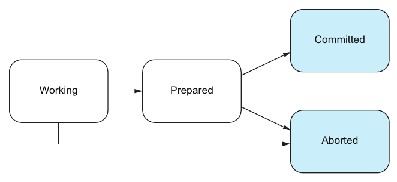
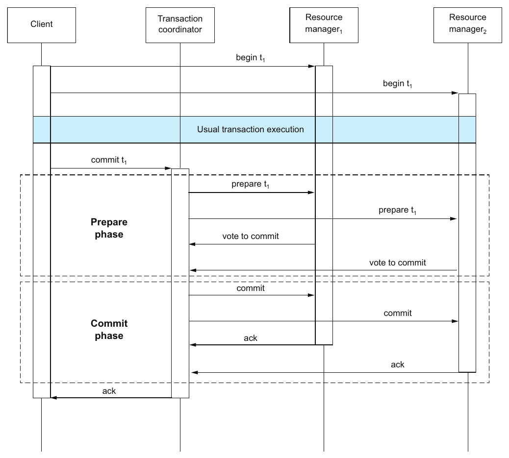
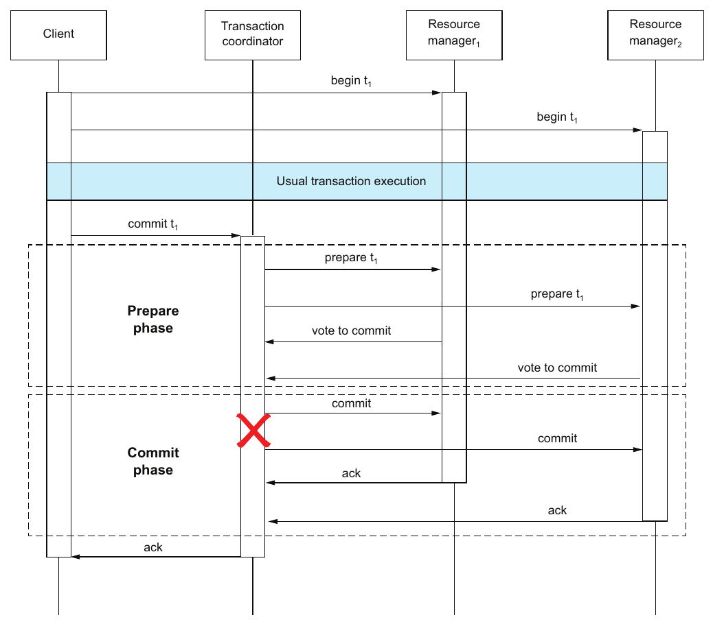

فصل ۶ · صص. ۷۹–۸۹
تراکنش توزیعشده
Distributed transactions
Think Distributed Systems, 1st Edition
یک تراکنش توزیعشده روی چند resource manager، یعنی RM، کشیده میشود: دیتابیسها، و همچنین سیستمهایی مثل صف پیام (ص. ۷۹). بردن انتقال فصل ۵ روی دو RM، یک تراکنش را به دو تراکنش تبدیل میکند، و این پرسش را پیش میکشد که چطور با هم commit یا abort کنند. پاسخ یک پروتکل تعهد اتمی است (صص. ۷۹–۸۰).
روی یک RM، اتمی بودن یک نوشتن محلی تک از ورودی commit یا abort است؛ و روی چند RM به پروتکلی نیاز دارد که با ایمنی، یعنی بی تصمیم متناقض، و زندهبودن، یعنی سرانجام همه تصمیم میگیرند، مشخص میشود (صص. ۸۱–۸۲). پروتکلها یا بندآورند یا نابندآور (ص. ۸۲). فصل یک تراکنش سراسری را بهعنوان برداری از حالت تراکنشهای محلی مدل میکند که هر کدام از working به prepared و بعد به committed یا aborted میروند (صص. ۸۲–۸۳). بعد Two-Phase Commit را میگردد: فازهای Prepare و Commit، نامتقارنی Vote-to-Commit در برابر Abort، قاعدههای بازیابی برای RMهایی که در هر نقطه شکست میخورند، و شکست coordinator که RMهای prepared را بند میآورد (صص. ۸۳–۸۶). بهبودها، مثل این که RMها از هم بپرسند، بند آمدن را کم میکنند. timeout خوردن و abort کردن میتواند ایمنی را نقض کند (صص. ۸۶–۸۸).
فهرست خود فصل (از فهرست مطالب کتاب)
- ۶.۱ تعهد اتمی: از یک RM به چند RM — ص. ۷۹
- ۶.۱.۱ تراکنش روی یک RM — ص. ۸۱
- ۶.۱.۲ تراکنش روی چند RM — ص. ۸۱
- ۶.۱.۳ بندآور و نابندآور — ص. ۸۲
- ۶.۲ جوهر تراکنش توزیعشده — ص. ۸۲
- ۶.۳ پروتکل Two-Phase Commit — ص. ۸۳
- ۶.۳.۱ در نبود شکست — ص. ۸۳
- ۶.۳.۲ در حضور شکست — ص. ۸۵
- ۶.۳.۳ بهبود — ص. ۸۶
از کتاب
مقدمه
کتاب از اینجا به بعد resource manager و سیستم دیتابیس را بهجای هم به کار میبرد (ص. ۷۹).
از کتاب
۶.۱ تعهد اتمی: از یک RM به چند RM
فهرست ۶.۱ همان انتقال بهعنوان یک تراکنش روی یک RM است. فهرست ۶.۲ میشکندش: مؤلفهی RM1 مبدأ را بدهکار و RM2 مقصد را بستانکار میکند، و هر کدام در BEGIN … COMMIT خودش (صص. ۷۹–۸۰). چطور ترکیب دو زیرتراکنش را خودش یک تراکنش کنیم (شکل ۶.۱)؟ با یک پروتکل تعهد اتمی (ص. ۸۰).
فصل فقط روی اتمی بودن تمرکز دارد، و صریح دربارهی consistency و جداسازی و durableی بحث نمیکند (ص. ۸۱).
۶.۱ تعهد اتمی: از یک RM به چند RM
۶.۱.۱ و ۶.۱.۲ یک RM در برابر چند RM
صص. ۸۱–۸۲| اتمی بودن از کجا میآید… | شکست پیش از تصمیم | |
|---|---|---|
| یک RM | یک نوشتن اتمی از ورودی commit یا abort در حالت محلی | سر بازیابی، طوری جلو بروید که گویی ورودی abort هست |
| چند RM | پروتکل تعهد اتمی که commitها را هماهنگ میکند (شکل ۶.۲) | پروتکل باید تصمیم بگیرد |
درستی یک پروتکل تعهد اتمی (صص. ۸۱–۸۲):
| تضمین | فرمول | به زبان ساده |
|---|---|---|
| ایمنی | ∄ rm₁, rm₂: state[rm₁] = commit ∧ state[rm₂] = abort | هیچ دو RMی به تصمیمهای متناقض نمیرسند |
| liveness | ∀ rm: ◇□ state[rm] = commit ∨ ◇□ state[rm] = abort | هر RMی سرانجام همیشه committed یا سرانجام همیشه aborted است |
۶.۱ تعهد اتمی: از یک RM به چند RM
۶.۱.۳ بندآور و نابندآور
ص. ۸۲| گونهی پروتکل | وقتی شرکتکنندهای شکست میخورد |
|---|---|
| بندآور | ایمنی، ولی نه لزوماً liveness |
| نابندآور | ایمنی و liveness با وجود شکست یک شرکتکننده: یک شکست نمیتواند جلوی تصمیم بقیه را بگیرد |
هر جا دو سیستم با هم باید «همه یا هیچ» شوند، مثلاً ClickHouse و یک فایل در object storage، مسئلهی تعهد اتمی پیدا میشود.
?نوبت شما · export شبانه یک فایل CSV در bucket مینویسد و در ClickHouse ثبت میکند که export انجام شده. ترتیب این دو چه باید باشد؟دیدن پاسخ
اول فایل، بعد ثبت؛ و ثبت را idempotent کنید. اگر بین این دو fail شود، اجرای بعدی فایل را بازنویسی و ثبت را کامل میکند. با چند RM بدون پروتکل تعهد، فقط ترتیبی را برمیگزینید که حالت میانیاش بیخطر است (صص. ۷۹–۸۲).
از کتاب
۶.۲ جوهر تراکنش توزیعشده
یک تراکنش توزیعشده یا سراسری از دو یا چند تراکنش غیرتوزیعشده یا محلی ساخته میشود (شکل ۶.۳) (ص. ۸۲). هر تراکنش محلی state machine شکل ۶.۴ را دنبال میکند (صص. ۸۲–۸۳):


تراکنشی که prepared است دیگر عملیاتی اجرا نمیکند ولی هنوز تصمیم نگرفته. حالتهای committed و aborted نهایی و برگشتناپذیرند (ص. ۸۲). حالت سراسری یک بردار حالت از حالتهای محلی است، بهعلاوهی پیامهای معلق در شبکه. شکل ۶.۵ از (working, working) به (prepared, working) به (prepared, prepared) به (committed, prepared) به (committed, committed) قدم میزند (ص. ۸۳).
از کتاب
۶.۳ پروتکل Two-Phase Commit
روش 2PC شناختهشدهترین و بیشترینمطالعهشده پروتکل تعهد اتمی است. بی شکست شرکتکننده ایمنی و liveness را تضمین میکند، ولی اگر یک شرکتکنندهی معین، یعنی هماهنگکننده، شکست بخورد فقط ایمنی را. پس بندآور است (ص. ۸۳).
۶.۳ پروتکل Two-Phase Commit
۶.۳.۱ در نبود شکست
صص. ۸۳–۸۵نقش client روی هر RM تراکنشی شروع میکند و خواندن و نوشتن معمولی اجرا. بعد بهجای این که از RMها بخواهد commit کنند، از TC میخواهد commit کند، که 2PC را شروع میکند (شکل ۶.۶):


| فاز | قدم (صص. ۸۴–۸۵) |
|---|---|
| ۱ · Prepare | مؤلفهی TC سهتایی ⟨Prepare, Timeout⟩ را durable میکند و ⟨Prepare⟩ را به همهی RMها میفرستد |
| برای commit، یک RM مقدار ⟨Vote-to-Commit⟩ را durable و میفرستد. برای abort، مقدار ⟨Abort⟩ را durable میکند، میفرستد و فوری abort میکند | |
| ۲ · Commit | همه به commit رأی دادند ⇐ مؤلفهی TC مقدار ⟨Commit⟩ را durable میکند و ⟨Commit⟩ را به همه میفرستد |
| دستکم یک ⟨Abort⟩ یا یک timeout ⇐ مؤلفهی TC مقدار ⟨Abort⟩ را durable و ⟨Abort⟩ را به همه میفرستد | |
| هر RMی مقدار ⟨Commit⟩ یا ⟨Abort⟩ را durable میکند و تراکنش محلیاش را commit یا abort |
لحظهی آها!، نامتقارنی (ص. ۸۵): رأی، زوج Vote-to-Commit و Vote-to-Abort نیست، و زوج Commit و Abort هم نه. زوج Vote-to-Commit و Abort است. در طول Prepare، یک RM نمیتواند خودش commit کند، ولی میتواند خودش abort کند.
۶.۳ پروتکل Two-Phase Commit
۶.۳.۲ در حضور شکست
صص. ۸۵–۸۶مدل سیستم همان partially synchronous فصل ۲ است (ص. ۸۵).
شکست RM روش 2PC را بند نمیآورد. کاری که یک RM در حال بازیابی میکند به آخرین ورودی logش بستگی دارد (شکلهای ۶.۷ تا ۶.۱۰):
| آخرین ورودی durable | معنا | سر بازیابی |
|---|---|---|
| نه ⟨Vote-to-Commit⟩ و نه ⟨Abort⟩ | «هنوز قول ندادهایم» | مقدار ⟨Abort⟩ را durable و ⟨Abort⟩ را به TC بفرست |
| مقدار ⟨Vote-to-Commit⟩ | «از قبل قول دادهایم» | از TC بپرس تصمیم چه بود |
| مقدار ⟨Commit⟩ | «از قبل commit کردهایم» | REDO، تا عملیاتها اثر کنند |
| مقدار ⟨Abort⟩ | «از قبل abort کردهایم» | UNDO، تا هیچ عملیاتی اثر نکند |
شکست TC میتواند روش 2PC را بند بیاورد (ص. ۸۶): RMی که ⟨Vote-to-Commit⟩ را durable کرده تا تعمیر TC گیر است. در شکل ۶.۱۱، مؤلفهی TC در طول Commit و بعد از گفتن به RM1 که commit کند شکست میخورد. مؤلفهی RM2 نه میتواند commit کند و نه abort، چون نمیداند بقیه چه کردند.


امتحان کنید
روش 2PC: بازیابی و بند آمدن
باز کردن در صفحهی کامل ↗ · این شبیهسازی مدل خود vault از سازوکاری است که کتاب شرح میدهد.
۶.۳ پروتکل Two-Phase Commit
۶.۳.۳ بهبود
صص. ۸۶–۸۸خیلی از گونههای 2PC liveness را بهتر میکنند. اجراهای بندآور کمتری دارند، ولی باز هم چندتایی (ص. ۸۶).
| ایده | کِی کار میکند | کِی نمیکند (صص. ۸۷–۸۸) |
|---|---|---|
| از RMهای دیگر بپرس | اگر RMj از قبل commit یا abort کرده باشد، RMi میتواند امن همان کار را بکند | اگر همهی RMها به commit رأی داده باشند و هیچکدام تصمیم را نگرفته باشد (شکل ۶.۱۲)، کسی نمیداند |
| timeout بخور و abort کن | — | ناایمن: ساعتها کاملاً synchronous نیستند، پس وقتی TC برمیگردد و ⟨Commit⟩ میفرستد، بعضی RMها فکر میکنند داخل پنجرهشان رسیده و commit میکنند، در حالی که بقیه از قبل abort کردهاند |
کتاب این را «یادآوری مفیدی» از ظریف بودن پروتکلهای توزیعشده مینامد (ص. ۸۷).
نوشتن در ClickHouse و ذخیرهی cursor در dlt دو resource manager جدا هستند و هیچ coordinatorی بینشان نیست.
?نوبت شما · چرا 2PC بین ClickHouse و state loader پیاده نمیکنید؟دیدن پاسخ
ClickHouse فاز prepare ندارد، و 2PC اگر coordinator وسط کار بیفتد بندآور است: participantها تا برگشتن آن منتظر میمانند. at-least-once با insert idempotent همان نتیجه را بدون coordinator میدهد (صص. ۸۳–۸۸).
مرور
بدهبستانها در یک نگاه
| انتخاب | چه میدهد | چه میگیرد |
|---|---|---|
| یک RM | اتمی بودن از یک نوشتن محلی تک | داده باید در یک جا زندگی کند |
| روش 2PC | اتمی بودن بین RMها؛ شکست RM را تحمل میکند | سر شکست TC بند میآید؛ یک رفتوبرگشت اضافه و نوشتنهای اجباری log |
| پرسیدن RMها از همتاهایشان | اجراهای بندآمدهی کمتر | باز هم وقتی همه preparedاند و کسی نمیداند بند میآید |
| timeout خوردن و abort کردن | liveness | ایمنی را میشکند: تصمیمهای متناقض |
| پروتکلی نابندآور، بیرون از کتاب | liveness با وجود یک شکست | دورهای بیشتر، یا consensus روی تصمیم |
مرور
نکتههای کلیدی
- مفهوم resource manager واژهی عمومی هر شرکتکنندهای در یک تراکنش توزیعشده است، مثل یک دیتابیس یا یک صف پیام (ص. ۷۹).
- یک RM: اتمی بودن یک نوشتن اتمی از ورودی commit یا abort است. crash پیش از آن، سر بازیابی abort حساب میشود (ص. ۸۱).
- چند RM: یک پروتکل تعهد اتمی مطمئن میشود که زیرتراکنشها یکصدا commit یا abort کنند. ایمنی: هیچ RMی در حالی که دیگری abort میکند commit نمیکند. liveness: هر RMی سرانجام برای همیشه committed یا aborted میماند (صص. ۸۱–۸۲).
- پروتکلهای بندآور سر شکست یک شرکتکننده ایمنی را نگه میدارند ولی liveness را نه. پروتکلهای نابندآور با وجود شکست یک شرکتکننده هر دو را نگه میدارند (ص. ۸۲).
- حالتهای تراکنش محلی: working و prepared و committed و aborted. حالت یک تراکنش سراسری برداری از اینهاست، بهعلاوهی پیامهای در پرواز (صص. ۸۲–۸۳).
- روش 2PC یک coordinator تراکنش، یعنی TC، و دو RM یا بیشتر دارد. در Prepare، RMها رأی میدهند؛ و در Commit، coordinator فقط وقتی commit را تصمیم میگیرد که هر رأی Vote-to-Commit باشد (صص. ۸۳–۸۵).
- نامتقارنی: در Prepare، یک RM میتواند یکطرفه abort کند ولی هیچوقت نمیتواند یکطرفه commit کند (ص. ۸۵).
- شکست RM روش 2PC را بند نمیآورد؛ شکست TC میتواند. RMی که به commit رأی داده تا تعمیر TC گیر میکند (صص. ۸۵–۸۶).
- مفهوم timeout خوردن برای abort ناایمن است. با ساعتهای ناقص، Commit یک TC بازگشته میتواند داخل پنجرهی timeout بعضی RMها بنشیند و بیرون پنجرهی بقیه (ص. ۸۷).
تمرین
خودتان را بسنجید
پرسشها و پاسخها مال vault است و از روی یادداشتهای بالا نوشته شده؛ پاسخها به صفحههای کتاب ارجاع میدهند.
۱خاصیتهای ایمنی و liveness یک پروتکل تعهد اتمی را بیان کنید.دیدن پاسخ
ایمنی: هیچ دو RMی با یکی committed و دیگری aborted تمام نمیشوند. liveness: هر RMی سرانجام همیشه committed یا سرانجام همیشه aborted است (صص. ۸۱–۸۲).
۲چه چیزی پروتکل بندآور را از نابندآور جدا میکند؟دیدن پاسخ
پروتکل بندآور سر شکست یک شرکتکننده ایمنی را تضمین میکند ولی liveness را نه. نابندآور با وجود شکست یک شرکتکننده هر دو را تضمین میکند (ص. ۸۲).
۴یک RM بعد از durable کردن ⟨Vote-to-Commit⟩ crash میکند. سر بازیابی چه میکند و چرا؟دیدن پاسخ
از TC تصمیم را میپرسد. قول commit داده، پس دیگر نمیتواند خودش abort کند، ولی نمیداند بقیه commit کردهاند یا نه (صص. ۸۵–۸۶).
۵چرا شکست TC میتواند 2PC را بند بیاورد ولی شکست RM نه؟دیدن پاسخ
یک RM در حال بازیابی همیشه میتواند از log خودش یا با پرسیدن از TC بفهمد چه کند. RMهایی که به commit رأی دادهاند به تصمیم TC وابستهاند، و ممکن است هیچکس دیگری نداشته باشدش (صص. ۸۵–۸۶).
۶چرا «timeout بخور و abort کن» برای RMهای آماده ناایمن است؟دیدن پاسخ
ساعتها کاملاً synchronous نیستند. دستور Commit یک TC بازگشته میتواند داخل پنجرهی timeout بعضی RMها برسد، که commit میکنند، و بیرون پنجرهی بقیه، که از قبل abort کردهاند، پس تصمیمها متناقض میشوند (ص. ۸۷).
۷پرسیدن از RMهای دیگر کِی کمکی نمیکند؟دیدن پاسخ
وقتی همهی RMها به commit رأی دادهاند و هیچکدام هنوز ⟨Commit⟩ یا ⟨Abort⟩ نگرفته (شکل ۶.۱۲) (ص. ۸۷).
مکمل
فراتر از کتاب
مکمل vault، نه از متن کتاب.
- نابندآور کردن 2PC. اصلاح استاندارد این است که تصمیم coordinator را با consensus تکرار کنید، مثل Paxos Commit از Gray و Lamport یا گروههای شرکتکنندهی Paxosتکرارشده در Spanner. آنوقت coordinator crashکرده با replicaی دیگری عوض میشود که تصمیم را میداند. روش Three-Phase Commit فازی پیش از commit اضافه میکند ولی زیر پارتیشن شبکه ایمن نیست. هر دو را در فصل ۱۳ کتاب Database Internals و شبیهسازی پروتکل commitش مقایسه کنید.
- قفلهایی که در حال بند آمدن نگه داشته میشوند. یک RM آماده باید قفلهایش را تا دانستن تصمیم نگه دارد، پس یک 2PC بندآمده تراکنشهای دیگر روی همان ردیفها را هم بند میآورد. از همینجاست که فصل ۸ کتاب DDIA دربارهی تراکنشهای XA در عمل محتاط است.
- الگوی sagaها کلاً از تعهد اتمی میپرهیزند: هر تراکنش محلی خودش commit میکند، و شکستها با جبران مدیریت میشوند، یعنی همان بازیابی روبهعقب فصل ۳. مقالهی «Life beyond Distributed Transactions» از Helland، که در فصل ۵ ارجاع شده، برای همین سبک استدلال میکند.
قدمهای بعدی
ادامه بدهید
پیوندها
- فصلهای مرتبط: فصل ۱: فکر کردن در سیستمهای توزیعشده که فضای رفتار تراکنشی دوشرکتکنندهای را دارد، فصل ۳: تحمل شکست که بند آمدن را بهعنوان fail-safe دارد، فصل ۵: تراکنش که Undo و Redo و اتمی بودن روی یک RM را دارد، فصل ۱۰: consensus توزیعشده که ابزار تعهد نابندآور را دارد، و فصل ۱۱: اجراهای durable که فرایندهای بین سرویسها بی 2PC را دارد.